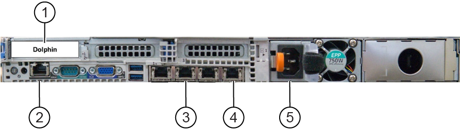

ISC tasks
Common steps for hardware replacements within the ISC
Prerequisites
Procedure
- ICN Replacement
- Loosen the fixing screws and lift the ISC PW cover a small distance to remove it.note: If the furnished closet door prevents removal, you can separate the PW cover into two pieces by removing 6 screws at the center.
Figure 1. ISC PW Cover

- Remove the rear access cover.
Figure 2. ICN cable connections (Gen 7, Dell R640)

1 PCIe port (Dolphin card) 2 iDRAC (management controller for ICN) 3 Raw data server (RDS) - optional, only for research sites 4 Main switch (port 4), only 1 network cable is needed for GEN 7 and Gen 7-DL ICN 5 Power - Beijing steps
- Scans
- Click the New Worklist icon.
Figure 3. New worklist icon

- Enter for weight: 111.
- Click Show All Protocols....
- When the Protocol Selector menu opens, click Protocol Details.
- Select the Protocol Library: GE.
Figure 4. Setting protocols

- Select Adult.
- Click the Template tab.
- Select 3 - Plane 2D Localizer and click the arrow to move the selection to the box on the right.
Figure 5. Protocol selected

- Click Accept.
- Click Save.
- Click Start Exam.
- Enter the following image parameters.
Figure 6. Image parameters
Option Description Frequency field of view (FOV) (Freq. FOV) 30.0 Phase FOV 1.00 Slice Thickness 5.0 - Click Save RX.
- Click Scan.